Average Number
Weighted Average
兩數，依照比例（權重），各取一部分，加總，得到「加權平均值」。
加權平均值介於兩數之間。調整權重，可以得到兩數之間的每一種數字。
x = w x₁ + (1-w) x₂ (0 ≤ w ≤ 1)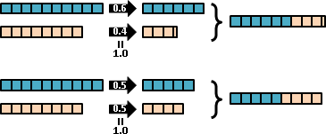
推廣到多數。加權平均值介於最大值和最小值之間。
x = w₁x₁ + w₂x₂ + ... + wₙxₙ (w₁ + ... + wₙ = 1)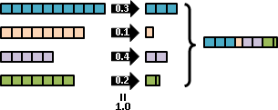
推廣到高維度。加權平均值介於凸包之間。
[x] [x₁] [x₂] [xₙ] [y] = w₁ [y₁] + w₂ [y₂] + ... + wₙ [yₙ] (w₁ + ... + wₙ = 1) [z] [z₁] [z₂] [zₙ] 其實只是每個維度分開處理 x = w₁ x₁ + w₂ x₂ + ... + wₙ xₙ y = w₁ y₁ + w₂ y₂ + ... + wₙ yₙ z = w₁ z₁ + w₂ z₂ + ... + wₙ zₙ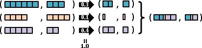
權重推廣成任意數。每個權重另外除以權重總和。
(w₁) (w₂) (w₃)
a b c ax₁ + bx₂ + cx₃
x = ————— x₁ + ————— x₂ + ————— x₃ = ———————————————
a+b+c a+b+c a+b+c a + b + c
a₁ aₙ
x = ————————————— x₁ + ... + ————————————— xₙ
a₁ + ... + aₙ a₁ + ... + aₙ
a₁ x₁ + ... + aₙ xₙ
= ———————————————————
a₁ + ... + aₙ
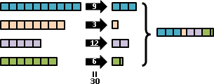
數字推廣成任意事物。加權平均值無所不在。
主角 加權平均值 -------- ---------- 質點 重心 溶液 混和濃度 機率 期望值 座標點 凸包範圍 函數點 線性內插 線性代數 線性組合 三原色 人類眼中的彩色
加權平均值的精髓：多數化作一數。
Floating Number
Random Variable與Distribution
現實世界的數值，通常是浮動數值，不是精準數值。數值具有多種可能性，有時高一點，有時低一點。
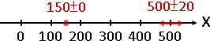工程師活用了區間的概念，描述浮動數值。例如食品包裝經常見到的500±20，表示數值可能是區間[480,520]的其中一個。
工程師命名為「誤差範圍」。好用，但是太過陽春。
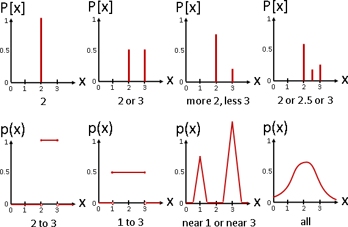數學家活用了比例、函數兩個概念，描述浮動數值。我們可以自由控制要出現那些數值，個別的數值（離散）、一段範圍的數值（連續）。我們甚至可以個別調整每一種數值的出現程度高低。
數學家命名為「隨機變數」。這個名稱經常造成誤解，事實上這根本不隨機。理想的名稱應是「浮動數字」。
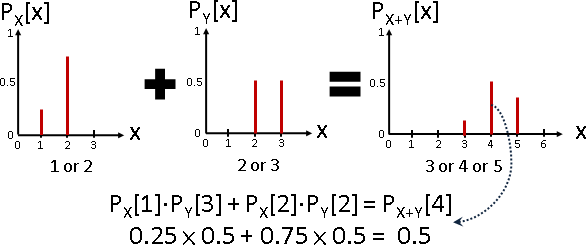兩個隨機變數可以加減乘除，但是計算過程非常複雜：試誤法，針對一個答案，窮舉各種得到此答案的方式，累加機率。
add: X+Y (convolution)
subtract: X-Y (convolution)
multiply: XY (Dirichlet convolution)
divide: X/Y
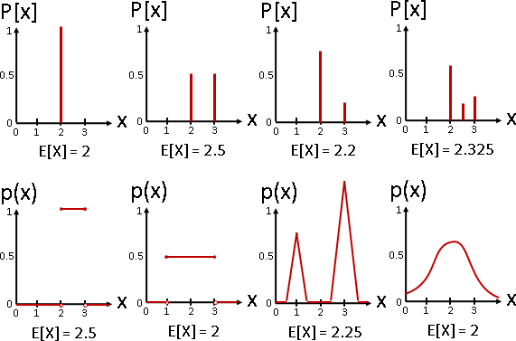
數學家定義了一些簡易指標，可以迅速獲知隨機變數的重點。
一個隨機變數的 平均值 mean : E[X] 均方值 mean square : E[X^2] 變異數 variance : E[(X-E[X])^2] 兩個隨機變數的 共相關數 correlation : E[XY] 共變異數 covariance : E[(X-E[X])(Y-E[Y])] 共相關係數 correlation coefficient : CoVar[X,Y] / sqrt(Var[X]) / sqrt(Var[Y])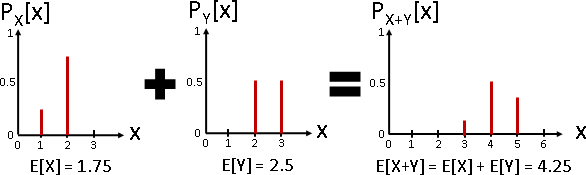
由於隨機變數的四則運算非常複雜，數學家鮮少討論隨機變數的四則運算，轉而討論隨機變數的指標的四則運算。出乎意料地優雅。
E[X+Y] = E[X] + E[Y] E[XY] = E[X] * E[Y] if X and Y are independnet E[X+k] = E[X] + k E[X*k] = E[X] * k Var[X+Y] = Var[X] + Var[Y] + CoVar[X,Y] Var[X-Y] = Var[X] + Var[Y] - CoVar[X,Y] CoVar[X,Y] = 0 if X and Y are independnet Var[X+k] = Var[X] Var[X*k] = Var[X] * k^2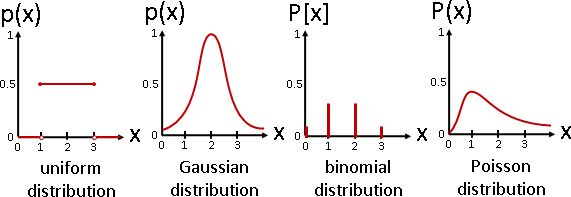
至於「每一種數值的出現程度高低」的函數，數學家命名為「分布」。數學家創造了許多經典的分布，數學性質極強。例如兩個常態分布隨機變數，相加減還是常態分布。相乘除就不是。
uniform distribution Gaussian distribution (normal distribution) binomial distribution Poisson distribution
大學的機率課程已經談過這些東西，此處只做重點歸納。
Mixture Distribution（Mixture Model）
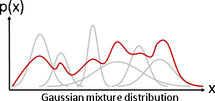數個隨機變數，浮動出現其中一個隨機變數。兩層隨機變數。
其實就是數個分布函數的加權平均值，因而稱作「混合分布」。想一想為什麼。
混合分布是計算學家的最愛。用幾個經典的分布，調整平均數、變異數，以及權重，組合出具有曼妙曲線的分布。
經典的混合分布，像是數個常態分布的加權平均值，稱做「高斯混合模型Gaussian Mixture Model」。
Weighted Average of Random Variables
真實世界當中，數字通常不精準，數字通常有誤差。引入機率分布，讓每個數字擁有浮動範圍，是個不錯的辦法。例如讓每個數字套用常態分布。
浮動數字的加權平均值，我不清楚是否有人研究。如果只有兩個數字，而且權重都是0.5，加權平均值就是摺積。值得一提的是，兩個常態分布的摺積仍是常態分布，平均數、變異數很好推算：
Random Number
Random Number
「隨機數」、「亂數」。隨便的數字。我們習慣一口氣取大量亂數，形成一個數列。
1694 19262 3252 4541 20 28590 6191 814 30047 9007 29380 1639 23559
人類傾向考慮兩個面向：無法預測（齊亂）、均勻分布（聚散）。前者令亂數無秩序，後者令亂數有秩序──乍聽矛盾，卻可並行不悖，此即成語「亂中有序」，好比混沌與碎形。
Pseudorandom Number
「偽隨機數」、「偽亂數」。缺少了齊亂的要素。
計算機只能接受明確指令，人類只好使用明確數學公式、明確演算法來製造亂數。具備規律、可以預測，於是稱做「偽亂數」。
C的內建函式庫，提供了偽亂數。可惜不是均勻分布uniform distribution，時常為人詬病。
C++的內建函式庫，提供了健全的偽亂數。
儘管偽亂數具有規律、可以預測，我們還是可以努力讓偽亂數看起來似乎很亂，讓人一時無法預測。然而，什麼樣子叫做「看起來似乎很亂」呢？據我所知，目前似乎沒有相關的數學概念，接近的概念有「逆序對」、「熵」、「Discrepancy」、「正規數」。擁有類似困境的有「加密」、「取樣」。
Pseudorandom Number Generator
設計偽亂數，目前大家的共識是分開討論聚散與齊亂。
首先固定聚散、調整齊亂：亂數固定是均勻分布，調整成「看起來似乎很亂」。稱做Pseudorandom Number Generator。
再來調整聚散：均勻分布的亂數，進行變化，變成其他分布的亂數。稱做Pseudorandom Number Sampling。
演算法（Linear Congruential Generator）
http://www.zhihu.com/question/22818104
以數學式子xnext = (((x * a) + b) % n);不斷製造偽亂數。
聚散：當n是質數，依序取n個偽亂數，剛好0到n-1各出現一次，呈現均勻分布。當n不是質數，甚至n與a沒有互質，就很難說了。總之頗糟糕。
齊亂：保證前n個數字，剛好0到n-1各出現一次。保證接下來的數字，順序相同，不斷循環。總之頗糟糕。
唯一的優點是算得快。如果不太講求細節，不失為一個好方法。
C的rand()即是此演算法。
演算法（Mersenne Twister）
我沒有研究。請讀者自行上網查詢。
Pseudorandom Number Sampling
現在有了均勻分布的偽亂數，現在要製作其他分布的偽亂數。
因為主要的應用是取樣，所以命名為取樣，而不是分布。
UVa 12109
演算法（Rejection Method）
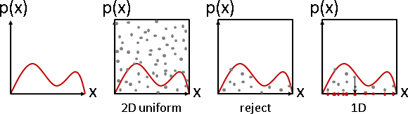二維偽亂數(u1,u2)，在分布曲線下就保留，在分布曲線上就捨棄，u1即為所求。相當直覺的方法。
缺點有兩個：一、很多偽亂數沒有用處，白算了。二、計算下一個偽亂數，延遲時間不穩定，有時一下就得到、有時一直得不到。
演算法（Inversion Method）
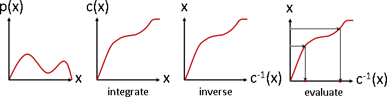求分布的積分（CDF）的倒函數。偽亂數經過倒函數即為所求。相當好的方法。
演算法（Transformation Method）
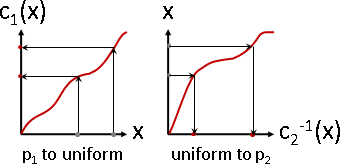當偽亂數不是均勻分布、而是其他分布，先變成均勻分布，再變成目標分布。
演算法（Box-Muller Method）
http://en.wikipedia.org/wiki/Box–Muller_transform
均勻分布變常態分布。不採用Inversion Method。因為常態分布的CDF的倒函數，公式太複雜，計算時間太長，所以發明了速度快、準度低的演算法。
演算法（Central Limit Thorem）
均勻分布變常態分布。中央極限定理：任意一個隨機變數，取樣取多了，樣本們的平均值是一個浮動數字，呈現常態分布。
速度更快，準度更低。
2D Random Number
2D Random Number
二維的情況下，更加講究齊亂、聚散，衍生許多種演算法。因為缺乏「看起來似乎很亂」的數學概念，所以無法精準評比優劣。一切都是靠感覺。
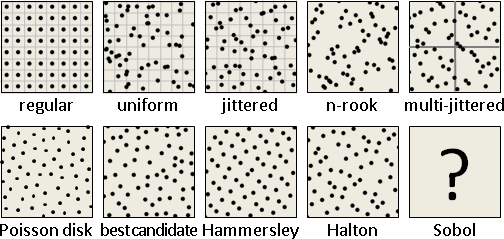
regular：排列整齊。缺點是太過整齊，具有明顯紋路。
uniform：均勻分布。缺點是不夠整齊，偶有空白小格。
jittered：regular + uniform，每小格任取一點。
宏觀整齊適中，微觀仍不夠整齊，常常靠太近。
n-rook：n個城堡不互相攻擊。奇爛無比。
multi-jittered：每小格實施n-rook。稍微改善小處不夠整齊的問題。
Poisson disk：每一點到其他點的最短距離為定值d。整齊適中。極慢。
best candidate：每回合，隨機取k點，挑出「與當前所有點的最短距離」最大的那一點。
比Poisson disk略差，但是可以輕鬆增減取樣點。稍慢。
Hammersley：(i, i的二進位鏡射)。整齊適中。超快！
Halton：(i的a進位鏡射, i的b進位鏡射)，a與b互質。
比Hammersley略差，但是可以輕鬆增減取樣點。超快。
Sobol：我沒有研究。
二維的情況下，浮現了一個新要素：地序。地緣相近的數字，不准連續出現。然而目前的演算法，多半未考慮生成過程的地序，只考慮生成結果的齊亂與聚散。
演算法（Poisson Disk Sampling）
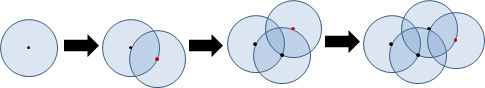http://bl.ocks.org/mbostock/dbb02448b0f93e4c82c3
在圓形們的邊界上隨機取點。
演算法（Best Candidate Sampling）
http://bl.ocks.org/mbostock/6224050
演算法（Hammersley Sequence）
(i, i的二進位鏡射)。
i | i₍₂₎ |Φ(i)₍₂₎| Φ(i) --|------|-------|------ 1 | 1 | .1 | .5 2 | 10 | .01 | .25 3 | 11 | .11 | .75 4 | 100 | .001 | .125 5 | 101 | .101 | .635 6 | 110 | .011 | .325 7 | 111 | .111 | .875 8 | 1000 | .0001 | .0625 Φ(i): radical inverse of integer i
演算法（Halton Sequence）
演算法（Sobol Sequence）
http://web.maths.unsw.edu.au/~fkuo/sobol/joe-kuo-notes.pdf
演算法（Recursive Wang Tile）
Shape Mapping【尚無專有名詞】
二維亂數，即是正方形亂數。可以進一步變成其他形狀，諸如矩形、三角形、圓盤、球面、半球面。
轉換時必須注意面積變化。面積變化，導致密度變化，導致亂數不均勻。
舉例來說，正方形變圓形，長變成幅角、寬變成半徑平方。錯誤的方式是寬變半徑，導致亂數不均勻，中央密、外圍疏。
Hash Function
Hash Function
「雜湊函數」。輸入輸出都是數字的函數，但是有著形形色色的變種：限寬、均勻、保距、量化、混亂、單向、編碼。大家視情況需要，混用多個變種。
各種變種仍在發展中，以下只簡介。
1. hash function
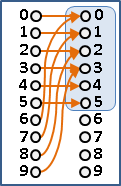限寬。限制輸出範圍。簡易方式是mod運算。
用途是縮減數字範圍。
2. uniform hash function
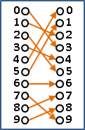均勻。輸出數字使用機率均等。簡易方式是mod最大公因數。
用途是均勻分散儲存。知名應用是hash table。
3. isometric mapping / locality-sensitive hashing
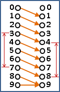保距。所有數對，變換前的差異，大致等於變換後的差異。簡易方式是線性變換。
同樣道理，還可以發明保長、保角、保秩、保序等變種。
用途是以雜湊值估計相似度。
4. quantization / projection
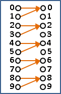量化。刪除數字的細節，降低精確度。簡易方式是floor運算。
用途是簡化數字。知名演算法是PCA、KNN。
5. pseudorandom hash function
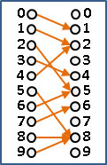混亂。輸出數字是固定的隨機數字。簡易方式是以輸入數字生成亂數、隨機排列。
6. cryptographic hash function
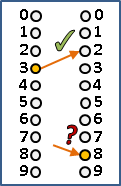單向。難以從輸出推算輸入。簡易方式是餘數連乘、三角函數。
用途是密碼、摘要、簽章，讓外人難以偽造變換前的原始資料。知名演算法如SHA、MD5。
請參考本站文件「Encryption」。
7. coding
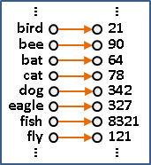編碼。輸入不是數字，而是其他元件，例如字串。簡易方式是多項式。
用途是建立索引表，知名演算法如murmur。
請參考本站文件「String」。